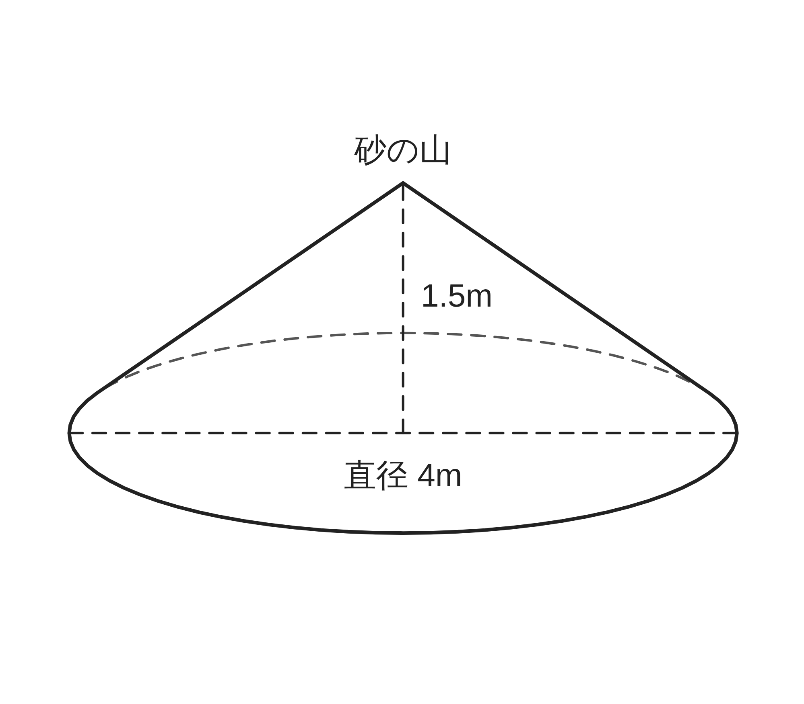
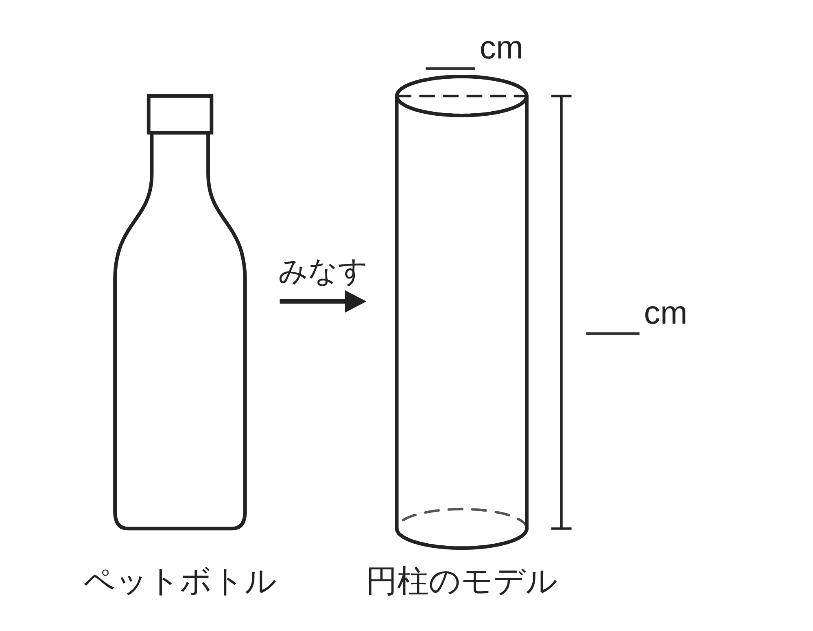
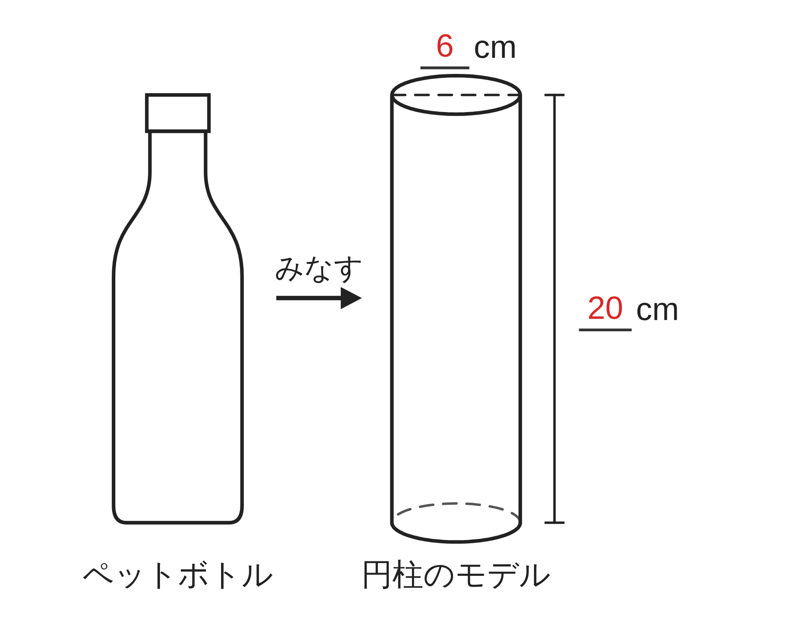
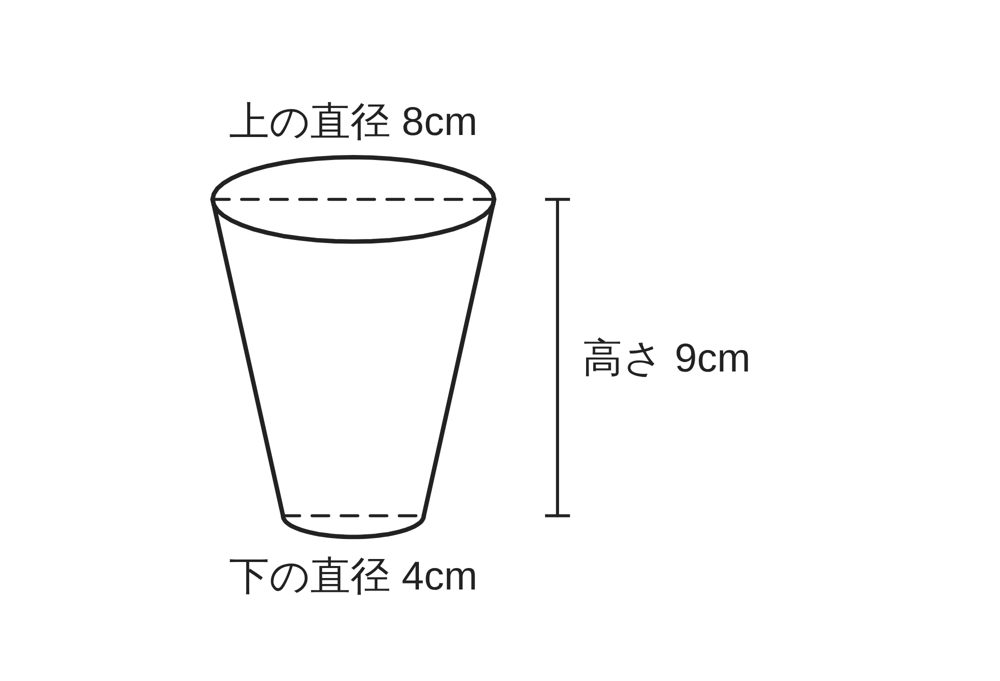

ペア学習
第14時 身のまわりのものを立体とみなして、量を見積もろう
第13時「表面積と体積を、たしかに求められるようになろう」の言葉。
柱体・錐体・球の公式も、1人1問ずつ出題して、自分の言葉で言う。
表面積
体積
側面積
高さ
母線
半径
空間図形 第14時 身のまわりのものを立体とみなして、量を見積もろう
めあて
第14時 身のまわりのものを立体とみなして、量を見積もろう
学習課題
運動場のすみに、砂の山がある。この山を、
底面の直径が 4m、高さが 1.5m の円錐とみなして、
砂の体積を見積もろう。
また、この砂を、1回に 0.5m³ 運べる一輪車で
運ぶと、何回で運び終わるだろう。
（π＝3.14 とする）

【自分の考え】どんな立体とみなすか。
空間図形 第14時 身のまわりのものを立体とみなして、量を見積もろう
学習課題のまとめ
第14時 身のまわりのものを立体とみなして、量を見積もろう
【自分の考え】どんな立体とみなすか。
円錐とみなす。底面の半径は 4÷2＝2（m）
体積と、運ぶ回数
1⁄3×π×2²×1.5＝2π（m³）
π＝3.14 で 2×3.14＝6.28 およそ 6.28m³
6.28÷0.5＝12.56 → 13回
（12回では、運び終わらない）
空間図形 第14時 身のまわりのものを立体とみなして、量を見積もろう
ことば
第14時 身のまわりのものを立体とみなして、量を見積もろう
身のまわりのものを、円柱・円錐・球などの立体と ことを、
「 にする」という。
モデルで求めた値は、実物とぴったり同じではなく、 の値である。
これを求めることを「見積もる」という。
モデルが実物より大きいと、見積もりは になり、
小さいと になる。
1L＝ cm³ 1m³＝ L
空間図形 第14時 身のまわりのものを立体とみなして、量を見積もろう
ことば
第14時 身のまわりのものを立体とみなして、量を見積もろう
身のまわりのものを、円柱・円錐・球などの立体とみなすことを、
「モデルにする」という。
モデルで求めた値は、実物とぴったり同じではなく、およその値である。
これを求めることを「見積もる」という。
モデルが実物より大きいと、見積もりは大きめになり、
小さいと小さめになる。
1L＝1000cm³ 1m³＝1000L
空間図形 第14時 身のまわりのものを立体とみなして、量を見積もろう
例題
第14時 身のまわりのものを立体とみなして、量を見積もろう
500mL と表示されたペットボトルを、
底面の直径が cm、高さが cm の
円柱とみなして、体積を見積もろう。
表示の 500mL（＝500cm³）とくらべよう。
（π＝3.14 とする）

【表示とくらべて】大きめか、小さめか。そのわけは？
空間図形 第14時 身のまわりのものを立体とみなして、量を見積もろう
例題 解答
第14時 身のまわりのものを立体とみなして、量を見積もろう
円柱とみなした体積
底面の半径 6÷2＝3（cm）
π×3²×20＝180π（cm³）
180×3.14＝565.2 およそ 565cm³

【表示とくらべて】大きめか、小さめか。そのわけは？
表示より大きめ。実物は、上のほうがすぼまっているので、
円柱とみなすと大きめになる。
空間図形 第14時 身のまわりのものを立体とみなして、量を見積もろう
考えよう
第14時 身のまわりのものを立体とみなして、量を見積もろう
紙コップ（図）の容積を、円柱とみなして見積もろう。
水を入れてはかると、およそ 260mL（＝260cm³）だった。
実物に近い見積もりにするには、
どの長さを使うとよいだろう。（π＝3.14）

①
円柱の底面の直径に使える長さを、図から選ぼう。
使う長さごとに、見積もりの式と値を書こう。
②
見積もりは、260cm³ より大きいか、小さいか。
長さごとに、わけも書こう。
③
実物に近い見積もりにするには、どの長さを使うとよいだろう。
わけも書こう。
空間図形 第14時 身のまわりのものを立体とみなして、量を見積もろう
振り返り
第14時 身のまわりのものを立体とみなして、量を見積もろう
今日のめあて
みなす
モデル
見積もる
およそ
大きめ・小さめ
円柱・円錐・球
L と cm³
今日わかったことを、ペアで1つずつ言い合おう。
ワークシートと演習プリントを出そう。（未完成でも出す）
空間図形 第14時 身のまわりのものを立体とみなして、量を見積もろう